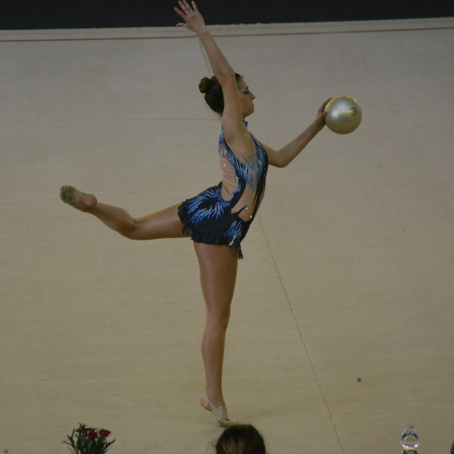
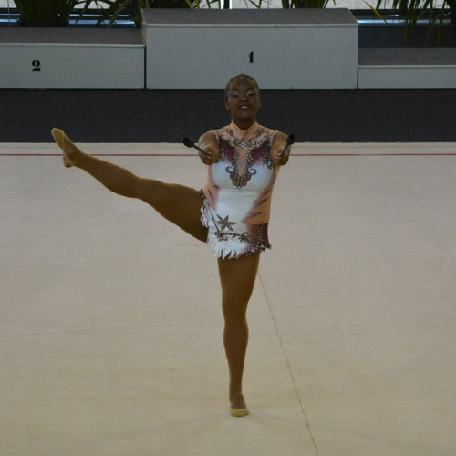
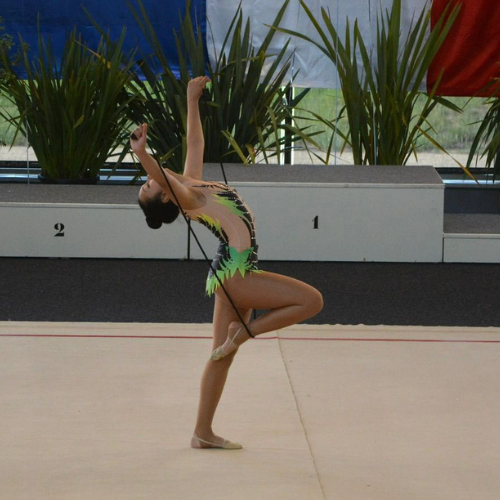
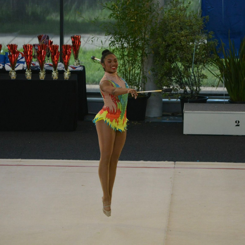
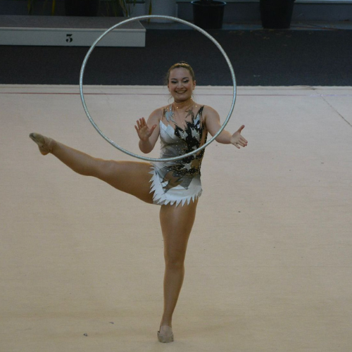
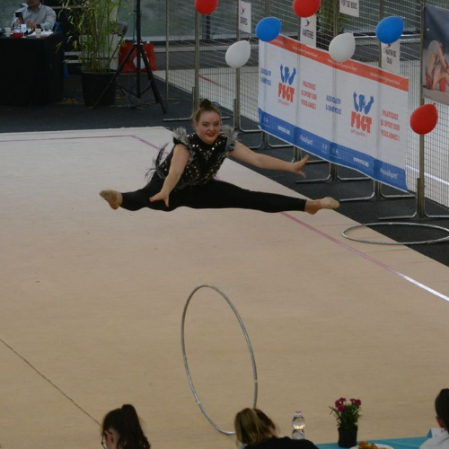
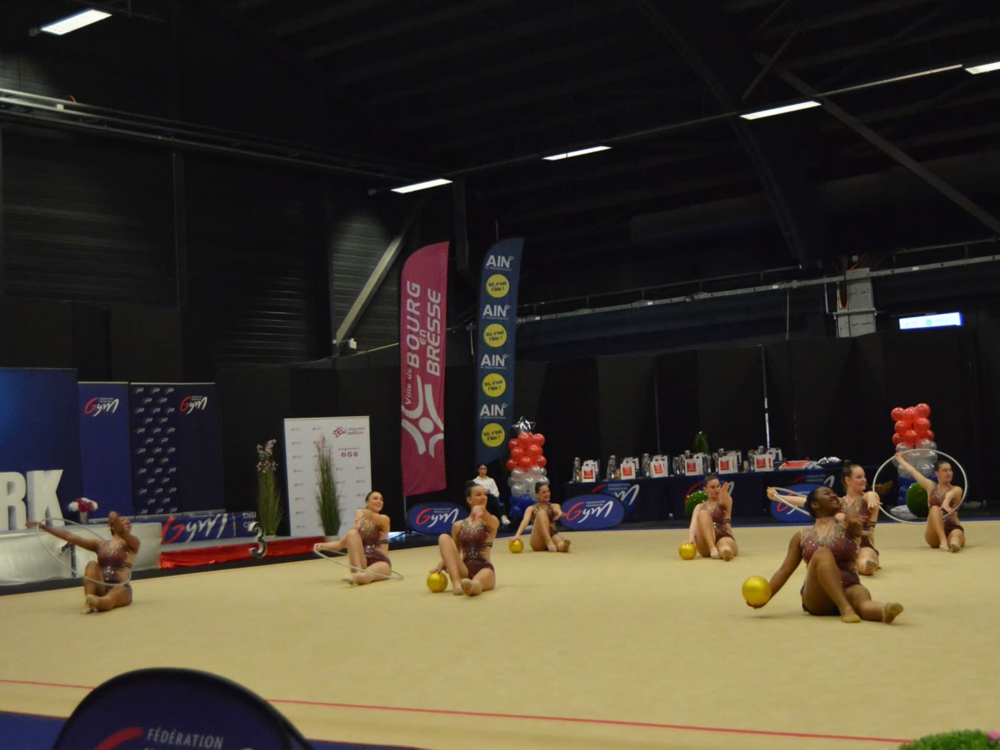

Individuelles

Sarah s'est présentée au ballon et a obtenu la seconde place aux Championnats de France 2023.
Elle a donc été nommée vice-championne de France dans la Catégorie Bronze Senior, et surclassée en Argent pour la saison suivante.
Elle a donc été nommée vice-championne de France dans la Catégorie Bronze Senior, et surclassée en Argent pour la saison suivante.

Annelise s'est présentée aux massues en Catégorie Bronze Senior Engin Libre.
Elle a décroché la 12ème place.
Elle a décroché la 12ème place.

Marion s'est présentée à la corde en Catégorie Bronze Senior Engin Libre.
Elle a décroché la 14ème place, ex-aequo avec Coralie.
Elle a décroché la 14ème place, ex-aequo avec Coralie.

Coralie s'est présentée aux massues en Catégorie Bronze Senior Engin Libre.
Elle a décroché la 14ème place, ex-aequo avec Marion.
Elle a décroché la 14ème place, ex-aequo avec Marion.

Dona s'est présentée au cerceau en Catégorie Bronze Senior Engin Imposé.
Elle décroché la 6ème place est a été surclassée en Catégorie Argent pour la saison 2024.
Elle décroché la 6ème place est a été surclassée en Catégorie Argent pour la saison 2024.

Malaury s'est présentée au cerceau en Catégorie Bronez Senior Engin Imposé.
Elle a décroché la 10ème place.
Elle a décroché la 10ème place.
Nous avions également Joanna, en Catégorie Bronze Senior Engin Libre.
Elle s'était présentée au ballon, malheuresement elle a été éliminée lors des Régionales.
Bravo à elle tout de même puisque c'était sa première année en individuel !
Félicitations à toutes nos gymnastes pour cette saison, même si certaiens ont été déçues, on a pu voir une amélioration après chaque passage !
Bonne chance pour la saison prochaine les individuelles <3
Elle s'était présentée au ballon, malheuresement elle a été éliminée lors des Régionales.
Bravo à elle tout de même puisque c'était sa première année en individuel !
Félicitations à toutes nos gymnastes pour cette saison, même si certaiens ont été déçues, on a pu voir une amélioration après chaque passage !
Bonne chance pour la saison prochaine les individuelles <3
Equipes

Composée de : Marion, Sarah, Malaury, Dona et Coralie, l'équipe s'est présentée au ballon.
Elles ont réussi à décrocher la 5ème place aux Championnats de France sur la musique d'Irina Aneenkova, au cerceau en 2019.
Elles ont réussi à décrocher la 5ème place aux Championnats de France sur la musique d'Irina Aneenkova, au cerceau en 2019.

Composée de : Célia, Ysaline, Yannaëlle, Amélie et Annelise, l'équipe s'est présentée au cerceau.
A cause d'une blessure en début d'année, l'équipe a passé ses premières compétitions à 4 au lieu de 5. Elles n'ont pu passer au complet qu'en finale.
Malgré cet incident, elles ont décroché la 10ème place aux Championnats de France sur Runaway Baby de Bruno Mars.
A cause d'une blessure en début d'année, l'équipe a passé ses premières compétitions à 4 au lieu de 5. Elles n'ont pu passer au complet qu'en finale.
Malgré cet incident, elles ont décroché la 10ème place aux Championnats de France sur Runaway Baby de Bruno Mars.

Le fameux duo Jo-Lau, donc composé de Joanna et Laura.
Elles ont du concourir cette année contre des nationales puisque la Catégorie Duo ne disposait pas de sous-division Bronze Arget Or.
Elles s'en sortent tout de même avec une belle 8ème place sur un remix de Toxic de Britney Spears.
Elles ont du concourir cette année contre des nationales puisque la Catégorie Duo ne disposait pas de sous-division Bronze Arget Or.
Elles s'en sortent tout de même avec une belle 8ème place sur un remix de Toxic de Britney Spears.
Pas de podium pour nos Ensembles Senior, mais une bonne saison tout de même, félicitations à elles!
Trophée Fédéral C

La Catégorie Trophée Fédéral C (TFC) est une catégorie d'ensemble spécifique à la FFG (Fédération Française de Gymnastique).
Elle consiste à faire passer un minimum de 8 gymnastes sur un enchaînement découpé en 3 parties :
Pour la saison 2023, les engins imposés étaient ballon et cerceau. L'équipe a donc été divisée en deux :
Ces 8 gymnastes ont été championnes départementales et ont réussi à se qualifier pour les Championnats de France. Championnats où elles ont pu décrocher la 22ème place sur 45.
- Partie 1 : 45 secondes avec le premier engin et la moitié des gymnastes sur le praticable, le reste attend sur les bords du praticable
- Partie 2 : 45 secondes avec le second engin et les gymnastes qui attendaient. Le gymnastes de la partie 1 attendent sur les bords du praticable
- Partie 3 : 45 secondes avec l'ensemble de l'équipe et es deux engins
Pour la saison 2023, les engins imposés étaient ballon et cerceau. L'équipe a donc été divisée en deux :
- Partie ballon : Malaury, Laura, Dona et Annelise
- Partie cerceau : Sarah, Coralie, Joanna et Amélie
Ces 8 gymnastes ont été championnes départementales et ont réussi à se qualifier pour les Championnats de France. Championnats où elles ont pu décrocher la 22ème place sur 45.